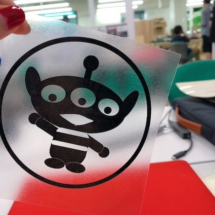

🌟ᴄᴜᴛᴛɪɴɢ ᴘʟᴏᴛᴛᴇʀ🌟
機械をつけて用紙を入れた後、後ろにあるロックを下す。機械にいる画面で3番を押す。
イラストプログラムで作った、ファイルを機械と連結されているコンピューターに入れる。
コンピューターで送信を押すと、カッティング刀が紙の上をカッティングし始める。
ロックを解いて用紙を取り除くと、紙にファイルと同じ絵でカッティングになって出ている。
カッティングになった部分のステッカーを時は、望む形のステッカーがなる。

その状態で上に透明なステッカーを張る。 これはステッカーの位置が動かないようにするためてしまうからだ。
つけたい部分にそのまま付され、透明なステッカーをゆっくり剥したら完成である。